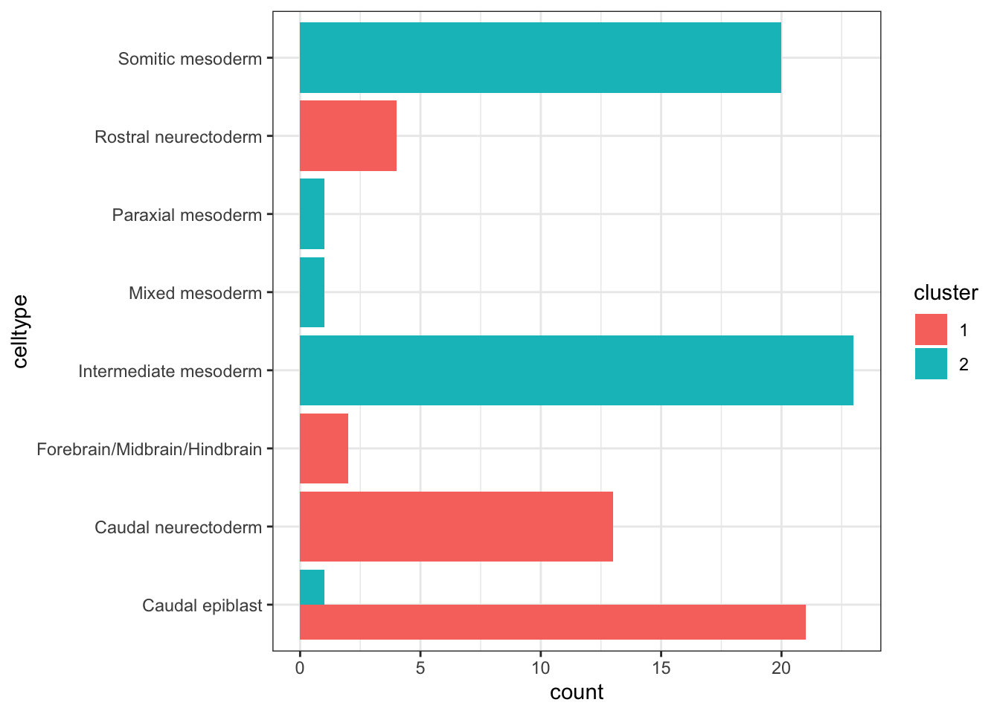
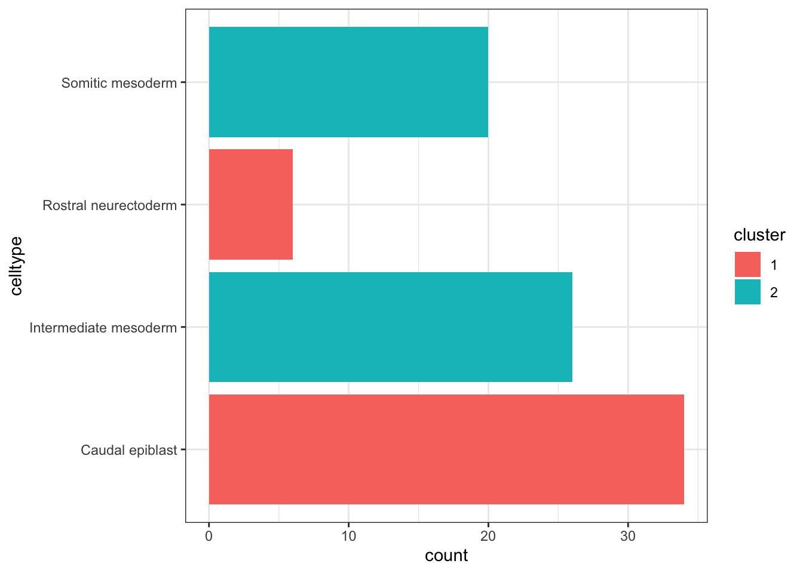
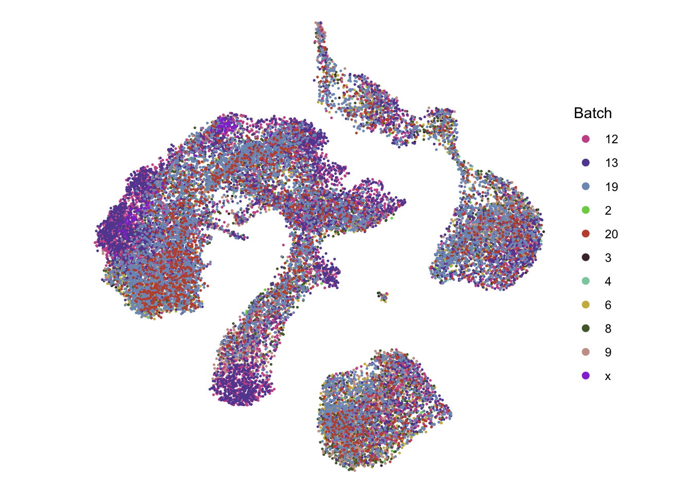
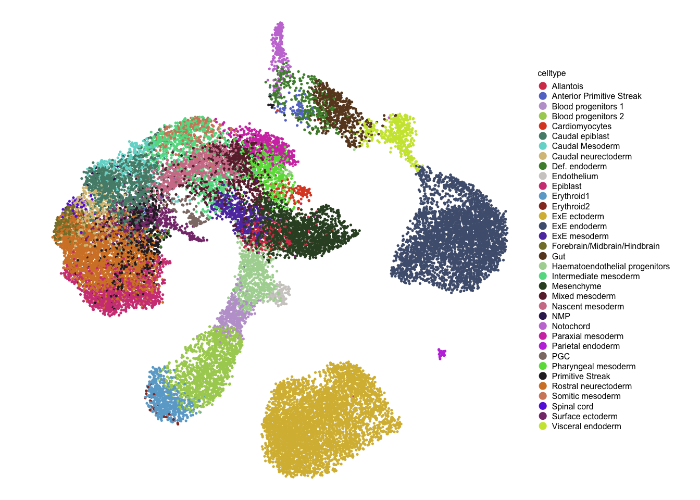
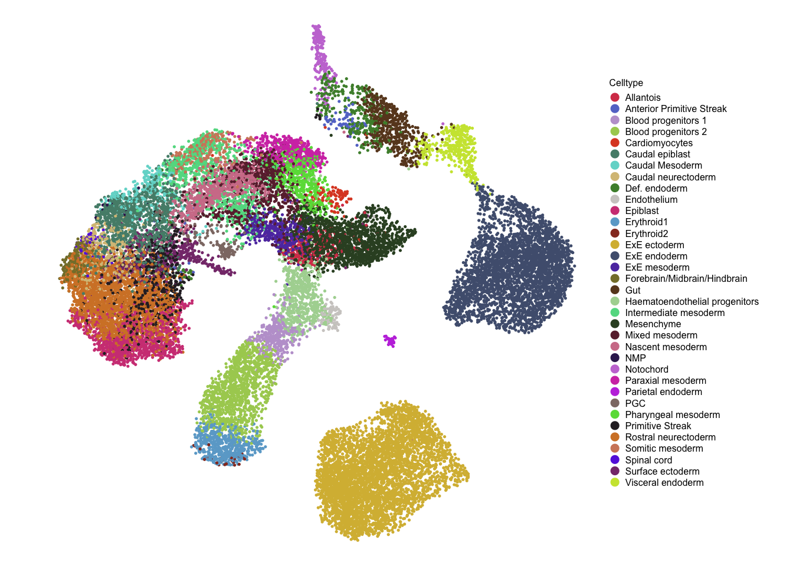
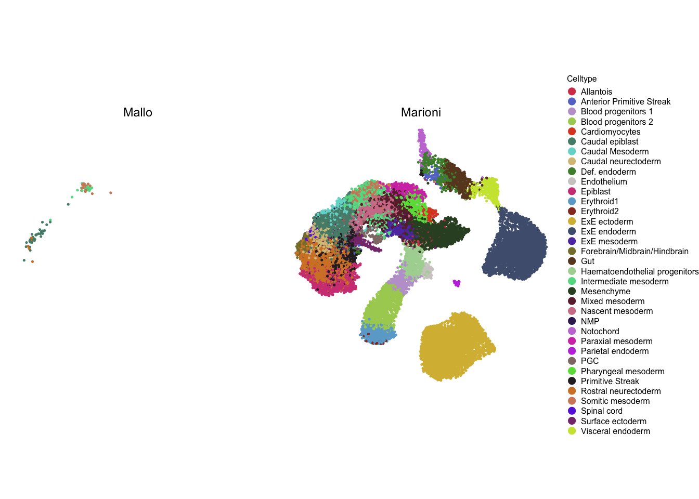

Last updated: 2020-08-10
Checks: 6 1
Knit directory: EHF_NMP/
This reproducible R Markdown analysis was created with workflowr (version 1.6.2). The Checks tab describes the reproducibility checks that were applied when the results were created. The Past versions tab lists the development history.
The R Markdown file has unstaged changes. To know which version of the R Markdown file created these results, you’ll want to first commit it to the Git repo. If you’re still working on the analysis, you can ignore this warning. When you’re finished, you can run wflow_publish to commit the R Markdown file and build the HTML.
Great job! The global environment was empty. Objects defined in the global environment can affect the analysis in your R Markdown file in unknown ways. For reproduciblity it’s best to always run the code in an empty environment.
The command set.seed(20200312) was run prior to running the code in the R Markdown file. Setting a seed ensures that any results that rely on randomness, e.g. subsampling or permutations, are reproducible.
Great job! Recording the operating system, R version, and package versions is critical for reproducibility.
Nice! There were no cached chunks for this analysis, so you can be confident that you successfully produced the results during this run.
Great job! Using relative paths to the files within your workflowr project makes it easier to run your code on other machines.
Great! You are using Git for version control. Tracking code development and connecting the code version to the results is critical for reproducibility.
The results in this page were generated with repository version 80bebeb. See the Past versions tab to see a history of the changes made to the R Markdown and HTML files.
Note that you need to be careful to ensure that all relevant files for the analysis have been committed to Git prior to generating the results (you can use wflow_publish or wflow_git_commit). workflowr only checks the R Markdown file, but you know if there are other scripts or data files that it depends on. Below is the status of the Git repository when the results were generated:
Ignored files:
Ignored: .DS_Store
Ignored: .Rhistory
Ignored: .Rproj.user/
Ignored: analysis/.DS_Store
Ignored: analysis/cache/
Ignored: analysis/figure/
Untracked files:
Untracked: data/00-data-loading.rds
Untracked: data/01-quality-control.rds
Untracked: data/02-normalization.rds
Untracked: data/03-feature-selection.rds
Untracked: data/04-reduced-dimensions.rds
Untracked: data/05-clustering.rds
Untracked: data/06-doublet-detection.rds
Untracked: data/07-cell-cycle.rds
Untracked: data/08-marker-detection.rds
Untracked: data/09-cell-annotation.rds
Untracked: data/10-data-integration.rds
Untracked: shiny/
Unstaged changes:
Modified: _workflowr.yml
Modified: analysis/10-data-integration.Rmd
Note that any generated files, e.g. HTML, png, CSS, etc., are not included in this status report because it is ok for generated content to have uncommitted changes.
These are the previous versions of the repository in which changes were made to the R Markdown (analysis/10-data-integration.Rmd) and HTML (docs/10-data-integration.html) files. If you’ve configured a remote Git repository (see ?wflow_git_remote), click on the hyperlinks in the table below to view the files as they were in that past version.
| File | Version | Author | Date | Message |
|---|---|---|---|---|
| html | 80bebeb | James Ashmore | 2020-03-17 | commit analysis |
| html | 438edf9 | James Ashmore | 2020-03-16 | commit docs |
| Rmd | 3c09383 | James Ashmore | 2020-03-16 | commit analysis |
Set chunk options:
knitr::opts_chunk$set(
autodep = TRUE,
cache = FALSE,
dev = "png",
error = FALSE,
message = FALSE,
warning = FALSE
)Load required packages:
pacman::p_load(batchelor, biomaRt, here, hues, org.Mm.eg.db, readr, scater, scran, BiocNeighbors)Import experiment data:
rds <- here("data/09-cell-annotation.rds")
sce <- read_rds(rds)
alt <- altExp(sce, "original", withColData = TRUE)Create function to reduce legend size:
small_legend <- function(myPlot, pointSize = 0.5, textSize = 3, spaceLegend = 0.1) {
myPlot +
guides(shape = guide_legend(ncol = 1, override.aes = list(size = pointSize)),
color = guide_legend(ncol = 1, override.aes = list(size = pointSize))) +
theme(legend.title = element_text(size = textSize),
legend.text = element_text(size = textSize),
legend.key.size = unit(spaceLegend, "lines"))
}Load the MouseGastrulationData package:
pacman::p_load(MouseGastrulationData)Select TS11 samples:
AtlasSampleMetadata <- subset(AtlasSampleMetadata, stage %in% c("E7.5", "E7.75"))Obtain processed samples from the dataset:
ref <- EmbryoAtlasData(type = "processed", samples = AtlasSampleMetadata$sample)Remove cells that are labelled as stripped nuclei:
ref <- ref[, !ref$stripped]Remove cells that are labelled as doublets:
ref <- ref[, !ref$doublet]Compute log-transformed normalized expression values:
ref <- logNormCounts(ref)Rename cells from query and reference data:
colnames(ref) <- paste("ref", seq_len(ncol(ref)), sep = "_")
colnames(alt) <- paste("alt", seq_len(ncol(alt)), sep = "_")Collect variance modelling results from both studies:
dec <- list()
dec$ref = modelGeneVar(ref, block = ref$sample)
rownames(dec$ref) <- rowData(ref)$ENSEMBL
dec$alt = metadata(alt)$modelGeneVarWithSpikes
rownames(dec$alt) <- rowData(alt)$gene_idFind common unverse of features from both studies:
ids <- list()
ids$ref <- rownames(dec$ref)
ids$alt <- rownames(dec$alt)
ids$all <- intersect(ids$ref, ids$alt)Combine variance modelling results from both studies:
dec$ref <- dec$ref[ids$all, ]
dec$alt <- dec$alt[ids$all, ]
dec$all <- combineVar(dec$ref, dec$alt)
rownames(dec$all) <- ids$allRemove female sex gene from list of features:
hvg <- rownames(dec$all)
hvg <- hvg[hvg != "ENSMUSG00000086503"] # XistRemove male sex genes from list of features:
mrt <- useMart("ensembl")
mrt <- useDataset("mmusculus_gene_ensembl", mart = mrt)
out <- getBM(c("ensembl_gene_id", "chromosome_name"), mart = mrt)
out <- subset(out, chromosome_name == "Y")
hvg <- hvg[!hvg %in% out$ensembl_gene_id]Remove cell-cycle related genes from list of features:
org <- select(org.Mm.eg.db, keys = "GO:0007049", keytype = "GOALL", column = "ENSEMBL")
hvg <- hvg[!hvg %in% org$ENSEMBL]Select features for downstream integration:
hvg <- dec$all[hvg, ]
hvg <- subset(hvg, bio > 0)
hvg <- rownames(hvg)Subset studies to common universe of features:
rownames(ref) <- rowData(ref)$ENSEMBL
rownames(alt) <- rowData(alt)$gene_id
ids <- intersect(rownames(ref), rownames(alt))
ref <- ref[ids, ]
alt <- alt[ids, ]Create list of samples (last one being the query sample):
fct <- unique(ref$sample)
all <- lapply(fct, function(x) ref[, ref$sample == x])
all <- c(all, alt)
names(all) <- c(fct, "x")Perform batch normalization:
all <- do.call(multiBatchNorm, all)Create merge order (oldest to youngest embryo; most cells to least cells; Mallo study):
dat <- colData(ref)
dat <- split(dat, dat$stage)
fct <- c("E8.5", "E8.25", "E8.0", "E7.75", "E7.5", "E7.25", "mixed_gastrulation", "E7.0", "E6.75", "E6.5")
fct <- fct[fct %in% names(dat)]
dat <- dat[fct]
dat <- lapply(dat, function(x) table(x$stage, x$sample))
dat <- lapply(dat, as.data.frame, stringsAsFactors = FALSE)
dat <- lapply(dat, function(x) x[order(x$Freq, decreasing = TRUE), "Var2"])
dat <- c(dat, "x")
dat <- unname(dat)Correct experiments in order specified above:
set.seed(1701)
mnn <- correctExperiments(
all,
subset.row = hvg,
correct.all = TRUE,
PARAM = FastMnnParam(merge.order = dat)
)Filter redundant columns from rowData slot:
rowData(mnn) <- rowData(mnn)[, c("rotation", "ENSEMBL", "SYMBOL")]
rownames(mnn) <- uniquifyFeatureNames(rowData(mnn)$ENSEMBL, rowData(mnn)$SYMBOL)Annotate cells from different studies:
mnn$study <- "Marioni"
mnn$study[mnn$batch == "x"] <- "Mallo"Identify kNN cells for Mallo study:
dim <- list(
qry = reducedDim(mnn, "corrected")[mnn$study == "Mallo", ],
sbj = reducedDim(mnn, "corrected")[mnn$study == "Marioni", ]
)
rownames(dim$qry) <- colnames(mnn)[mnn$study == "Mallo"]
rownames(dim$sbj) <- colnames(mnn)[mnn$study == "Marioni"]
knn <- queryKNN(dim$sbj, dim$qry, k = 10)
knn$names <- knn$index
knn$names <- matrix(rownames(dim$sbj)[knn$index], nrow = nrow(knn$index), ncol = ncol(knn$index))Annotate cells with celltype label:
mnn$celltype <- NA
ids <- rownames(dim$sbj)
colData(mnn)[ids, "celltype"] <- colData(ref)[ids, "celltype"]
ids <- rownames(dim$qry)
colData(mnn)[ids, "celltype"] <- colData(alt)[ids, "gastrulation_celltype"]Annotate cells with kNN celltype label:
mnn$knn.celltype <- NA
ids <- rownames(dim$sbj)
colData(mnn)[ids, "knn.celltype"] <- colData(ref)[ids, "celltype"]
val <- apply(knn$names, 1, function(x) names(sort(table(colData(ref)[x, "celltype"]), decreasing = TRUE))[1])
colData(mnn)[rownames(dim$qry), "knn.celltype"] <- valAnnotate cells with stage label:
mnn$knn.stage <- NA
ids <- rownames(dim$sbj)
colData(mnn)[ids, "knn.stage"] <- colData(ref)[ids, "stage"]
val <- apply(knn$names, 1, function(x) names(sort(table(colData(ref)[x, "stage"]), decreasing = TRUE))[1])
colData(mnn)[rownames(dim$qry), "knn.stage"] <- valPlot number of cells by celltype from Marioni study:
dat <- data.frame(celltype = mnn$celltype, study = mnn$study, row.names = colnames(mnn))
dat <- subset(dat, study == "Marioni")
ggplot(dat, aes(y = celltype)) + geom_bar() + theme_bw()
| Version | Author | Date |
|---|---|---|
| ea19c25 | James Ashmore | 2020-03-16 |
Plot number of cells by celltype and cluster from Mallo study:
dat <- data.frame(celltype = mnn$celltype, study = mnn$study, row.names = colnames(mnn))
dat <- subset(dat, study == "Mallo")
dat$cluster <- colData(alt)[rownames(dat), "cluster"]
ggplot(dat, aes(y = celltype, fill = cluster)) + geom_bar(position = "dodge") + theme_bw()
Create UMAP data with similar settings to the MouseGastrulationData package:
set.seed(42)
mnn <- runUMAP(mnn, dimred = "corrected", n_neighbors = 20, min_dist = 0.7)Plot cells coloured by batch:
dim <- reducedDim(mnn, "UMAP")
dat <- as.data.frame(dim)
dat$batch <- as.factor(mnn$batch)
col <- iwanthue(nlevels(dat$batch))
names(col) <- levels(dat$colour)
ggplot(dat, aes(V1, V2, colour = batch)) +
geom_point(size = 0.25) +
scale_colour_manual(name = "Batch", values = col) +
guides(colour = guide_legend(override.aes = list(size = 2))) +
theme_void() +
theme(aspect.ratio = 1)
| Version | Author | Date |
|---|---|---|
| ea19c25 | James Ashmore | 2020-03-16 |
Plot cells coloured by study:
dim <- reducedDim(mnn, "UMAP")
dat <- as.data.frame(dim)
dat$study <- as.factor(mnn$study)
col <- iwanthue(nlevels(dat$study))
names(col) <- levels(dat$colour)
ggplot(dat, aes(V1, V2, colour = study)) +
geom_point(size = 0.25) +
scale_colour_manual(name = "Study", values = col) +
guides(colour = guide_legend(override.aes = list(size = 2))) +
theme_void() +
theme(aspect.ratio = 1)
| Version | Author | Date |
|---|---|---|
| ea19c25 | James Ashmore | 2020-03-16 |
Plot cells coloured by cell type:
dim <- reducedDim(mnn, "UMAP")
dat <- as.data.frame(dim)
dat$celltype <- as.factor(mnn$celltype)
col <- iwanthue(nlevels(dat$celltype))
names(col) <- levels(dat$colour)
plt <- ggplot(dat, aes(V1, V2, colour = celltype)) +
geom_point(size = 0.25) +
scale_colour_manual(name = "Celltype", values = col) +
guides(colour = guide_legend(override.aes = list(size = 2))) +
theme_void() +
theme(aspect.ratio = 1)
small_legend(plt, pointSize = 2, textSize = 6, spaceLegend = 0.5)
| Version | Author | Date |
|---|---|---|
| ea19c25 | James Ashmore | 2020-03-16 |
Plot cells coloured by cell type and faceted by study:
dim <- reducedDim(mnn, "UMAP")
dat <- as.data.frame(dim)
dat$celltype <- as.factor(mnn$celltype)
dat$study <- as.factor(mnn$study)
col <- iwanthue(nlevels(dat$celltype))
names(col) <- levels(dat$colour)
plt <- ggplot(dat, aes(V1, V2, colour = celltype)) +
geom_point(size = 0.25) +
scale_colour_manual(name = "Celltype", values = col) +
guides(colour = guide_legend(override.aes = list(size = 2))) +
facet_wrap(~ study) +
theme_void() +
theme(aspect.ratio = 1)
small_legend(plt, pointSize = 2, textSize = 6, spaceLegend = 0.5)
Write experiment data:
readr::write_rds(mnn, here("data/10-data-integration.rds"))Print session information:
devtools::session_info()─ Session info ───────────────────────────────────────────────────────────────
setting value
version R version 4.0.2 (2020-06-22)
os macOS Catalina 10.15.5
system x86_64, darwin17.0
ui X11
language (EN)
collate en_GB.UTF-8
ctype en_GB.UTF-8
tz Europe/London
date 2020-08-10
─ Packages ───────────────────────────────────────────────────────────────────
package * version date lib source
AnnotationDbi * 1.50.3 2020-07-25 [1] Bioconductor
AnnotationHub 2.20.1 2020-08-03 [1] Bioconductor
askpass 1.1 2019-01-13 [1] CRAN (R 4.0.2)
assertthat 0.2.1 2019-03-21 [1] CRAN (R 4.0.2)
backports 1.1.8 2020-06-17 [1] CRAN (R 4.0.2)
batchelor * 1.4.0 2020-04-27 [1] Bioconductor
beeswarm 0.2.3 2016-04-25 [1] CRAN (R 4.0.2)
Biobase * 2.48.0 2020-04-27 [1] Bioconductor
BiocFileCache 1.12.1 2020-08-04 [1] Bioconductor
BiocGenerics * 0.34.0 2020-04-27 [1] Bioconductor
BiocManager 1.30.10 2019-11-16 [1] CRAN (R 4.0.2)
BiocNeighbors * 1.6.0 2020-04-27 [1] Bioconductor
BiocParallel 1.22.0 2020-04-27 [1] Bioconductor
BiocSingular 1.4.0 2020-04-27 [1] Bioconductor
BiocVersion 3.11.1 2020-04-07 [1] Bioconductor
biomaRt * 2.44.1 2020-06-17 [1] Bioconductor
bit 4.0.4 2020-08-04 [1] CRAN (R 4.0.2)
bit64 4.0.2 2020-07-30 [1] CRAN (R 4.0.2)
bitops 1.0-6 2013-08-17 [1] CRAN (R 4.0.2)
blob 1.2.1 2020-01-20 [1] CRAN (R 4.0.2)
callr 3.4.3 2020-03-28 [1] CRAN (R 4.0.2)
cli 2.0.2 2020-02-28 [1] CRAN (R 4.0.2)
codetools 0.2-16 2018-12-24 [1] CRAN (R 4.0.2)
colorspace 1.4-1 2019-03-18 [1] CRAN (R 4.0.2)
crayon 1.3.4 2017-09-16 [1] CRAN (R 4.0.2)
curl 4.3 2019-12-02 [1] CRAN (R 4.0.1)
DBI 1.1.0 2019-12-15 [1] CRAN (R 4.0.2)
dbplyr 1.4.4 2020-05-27 [1] CRAN (R 4.0.2)
DelayedArray * 0.14.1 2020-07-14 [1] Bioconductor
DelayedMatrixStats 1.10.1 2020-07-03 [1] Bioconductor
desc 1.2.0 2018-05-01 [1] CRAN (R 4.0.2)
devtools 2.3.1 2020-07-21 [1] CRAN (R 4.0.2)
digest 0.6.25 2020-02-23 [1] CRAN (R 4.0.2)
dplyr 1.0.1 2020-07-31 [1] CRAN (R 4.0.2)
dqrng 0.2.1 2019-05-17 [1] CRAN (R 4.0.2)
edgeR 3.30.3 2020-06-02 [1] Bioconductor
ellipsis 0.3.1 2020-05-15 [1] CRAN (R 4.0.2)
evaluate 0.14 2019-05-28 [1] CRAN (R 4.0.1)
ExperimentHub 1.14.1 2020-08-03 [1] Bioconductor
fansi 0.4.1 2020-01-08 [1] CRAN (R 4.0.2)
farver 2.0.3 2020-01-16 [1] CRAN (R 4.0.2)
fastmap 1.0.1 2019-10-08 [1] CRAN (R 4.0.2)
fs 1.5.0 2020-07-31 [1] CRAN (R 4.0.2)
generics 0.0.2 2018-11-29 [1] CRAN (R 4.0.2)
GenomeInfoDb * 1.24.2 2020-06-15 [1] Bioconductor
GenomeInfoDbData 1.2.3 2020-08-10 [1] Bioconductor
GenomicRanges * 1.40.0 2020-04-27 [1] Bioconductor
ggbeeswarm 0.6.0 2017-08-07 [1] CRAN (R 4.0.2)
ggplot2 * 3.3.2 2020-06-19 [1] CRAN (R 4.0.2)
git2r 0.27.1 2020-05-03 [1] CRAN (R 4.0.2)
glue 1.4.1 2020-05-13 [1] CRAN (R 4.0.2)
gridExtra 2.3 2017-09-09 [1] CRAN (R 4.0.2)
gtable 0.3.0 2019-03-25 [1] CRAN (R 4.0.2)
here * 0.1 2017-05-28 [1] CRAN (R 4.0.2)
hms 0.5.3 2020-01-08 [1] CRAN (R 4.0.2)
htmltools 0.5.0 2020-06-16 [1] CRAN (R 4.0.2)
httpuv 1.5.4 2020-06-06 [1] CRAN (R 4.0.2)
httr 1.4.2 2020-07-20 [1] CRAN (R 4.0.2)
hues * 0.2.0 2019-12-01 [1] CRAN (R 4.0.2)
igraph 1.2.5 2020-03-19 [1] CRAN (R 4.0.2)
interactiveDisplayBase 1.26.3 2020-06-02 [1] Bioconductor
IRanges * 2.22.2 2020-05-21 [1] Bioconductor
irlba 2.3.3 2019-02-05 [1] CRAN (R 4.0.2)
knitr 1.29 2020-06-23 [1] CRAN (R 4.0.2)
labeling 0.3 2014-08-23 [1] CRAN (R 4.0.2)
later 1.1.0.1 2020-06-05 [1] CRAN (R 4.0.2)
lattice 0.20-41 2020-04-02 [1] CRAN (R 4.0.2)
lifecycle 0.2.0 2020-03-06 [1] CRAN (R 4.0.2)
limma 3.44.3 2020-06-12 [1] Bioconductor
locfit 1.5-9.4 2020-03-25 [1] CRAN (R 4.0.2)
magrittr 1.5 2014-11-22 [1] CRAN (R 4.0.2)
Matrix 1.2-18 2019-11-27 [1] CRAN (R 4.0.2)
matrixStats * 0.56.0 2020-03-13 [1] CRAN (R 4.0.2)
memoise 1.1.0 2017-04-21 [1] CRAN (R 4.0.2)
mime 0.9 2020-02-04 [1] CRAN (R 4.0.2)
MouseGastrulationData * 1.2.0 2020-05-07 [1] Bioconductor
munsell 0.5.0 2018-06-12 [1] CRAN (R 4.0.2)
openssl 1.4.2 2020-06-27 [1] CRAN (R 4.0.1)
org.Mm.eg.db * 3.11.4 2020-08-10 [1] Bioconductor
pacman 0.5.1 2019-03-11 [1] CRAN (R 4.0.2)
pillar 1.4.6 2020-07-10 [1] CRAN (R 4.0.2)
pkgbuild 1.1.0 2020-07-13 [1] CRAN (R 4.0.2)
pkgconfig 2.0.3 2019-09-22 [1] CRAN (R 4.0.2)
pkgload 1.1.0 2020-05-29 [1] CRAN (R 4.0.2)
prettyunits 1.1.1 2020-01-24 [1] CRAN (R 4.0.2)
processx 3.4.3 2020-07-05 [1] CRAN (R 4.0.2)
progress 1.2.2 2019-05-16 [1] CRAN (R 4.0.2)
promises 1.1.1 2020-06-09 [1] CRAN (R 4.0.2)
ps 1.3.3 2020-05-08 [1] CRAN (R 4.0.2)
purrr 0.3.4 2020-04-17 [1] CRAN (R 4.0.2)
R6 2.4.1 2019-11-12 [1] CRAN (R 4.0.2)
rappdirs 0.3.1 2016-03-28 [1] CRAN (R 4.0.2)
Rcpp 1.0.5 2020-07-06 [1] CRAN (R 4.0.2)
RcppAnnoy 0.0.16 2020-03-08 [1] CRAN (R 4.0.2)
RCurl 1.98-1.2 2020-04-18 [1] CRAN (R 4.0.2)
readr * 1.3.1 2018-12-21 [1] CRAN (R 4.0.2)
remotes 2.2.0 2020-07-21 [1] CRAN (R 4.0.2)
rlang 0.4.7 2020-07-09 [1] CRAN (R 4.0.2)
rmarkdown 2.3 2020-06-18 [1] CRAN (R 4.0.2)
rprojroot 1.3-2 2018-01-03 [1] CRAN (R 4.0.2)
RSQLite 2.2.0 2020-01-07 [1] CRAN (R 4.0.2)
rstudioapi 0.11 2020-02-07 [1] CRAN (R 4.0.2)
rsvd 1.0.3 2020-02-17 [1] CRAN (R 4.0.2)
S4Vectors * 0.26.1 2020-05-16 [1] Bioconductor
scales 1.1.1 2020-05-11 [1] CRAN (R 4.0.2)
scater * 1.16.2 2020-06-26 [1] Bioconductor
scran * 1.16.0 2020-04-27 [1] Bioconductor
sessioninfo 1.1.1 2018-11-05 [1] CRAN (R 4.0.2)
shiny 1.5.0 2020-06-23 [1] CRAN (R 4.0.2)
SingleCellExperiment * 1.10.1 2020-04-28 [1] Bioconductor
statmod 1.4.34 2020-02-17 [1] CRAN (R 4.0.2)
stringi 1.4.6 2020-02-17 [1] CRAN (R 4.0.2)
stringr 1.4.0 2019-02-10 [1] CRAN (R 4.0.2)
SummarizedExperiment * 1.18.2 2020-07-14 [1] Bioconductor
testthat 2.3.2 2020-03-02 [1] CRAN (R 4.0.2)
tibble 3.0.3 2020-07-10 [1] CRAN (R 4.0.2)
tidyselect 1.1.0 2020-05-11 [1] CRAN (R 4.0.2)
usethis 1.6.1 2020-04-29 [1] CRAN (R 4.0.2)
uwot 0.1.8 2020-03-16 [1] CRAN (R 4.0.2)
vctrs 0.3.2 2020-07-15 [1] CRAN (R 4.0.2)
vipor 0.4.5 2017-03-22 [1] CRAN (R 4.0.2)
viridis 0.5.1 2018-03-29 [1] CRAN (R 4.0.2)
viridisLite 0.3.0 2018-02-01 [1] CRAN (R 4.0.1)
whisker 0.4 2019-08-28 [1] CRAN (R 4.0.2)
withr 2.2.0 2020-04-20 [1] CRAN (R 4.0.2)
workflowr * 1.6.2 2020-04-30 [1] CRAN (R 4.0.2)
xfun 0.16 2020-07-24 [1] CRAN (R 4.0.2)
XML 3.99-0.5 2020-07-23 [1] CRAN (R 4.0.2)
xtable 1.8-4 2019-04-21 [1] CRAN (R 4.0.2)
XVector 0.28.0 2020-04-27 [1] Bioconductor
yaml 2.2.1 2020-02-01 [1] CRAN (R 4.0.2)
zlibbioc 1.34.0 2020-04-27 [1] Bioconductor
[1] /Library/Frameworks/R.framework/Versions/4.0/Resources/library